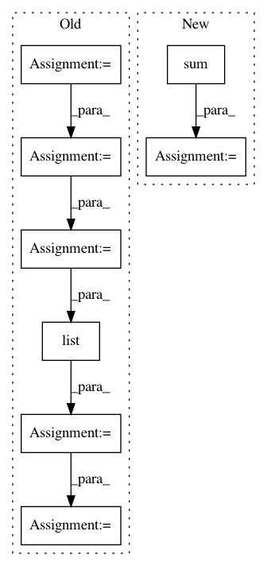

cbbcea8795e8da754a5b3ffb1a08ef66afd84eef,dask_image/ndmeasure/_utils.py,,_ravel_shape_indices,#Any#Any#Any#,54
Before Change
the raveled index from that.
dtype = numpy.dtype(dtype)
indices = _compat._indices(
dimensions, dtype=dtype, chunks=chunks
)
indices = list(indices)
for i in _pycompat.irange(len(indices)):
indices[i] *= dtype.type(numpy.prod(indices[i].shape[i + 1:]))
indices = dask.array.stack(indices).sum(axis=0)
return indices
After Change
Gets the raveled indices shaped like input.
indices = sum([
dask.array.arange(
0, numpy.prod(dimensions[i:]), numpy.prod(dimensions[i + 1:]),
dtype=dtype, chunks=c
)[i * (None,) + (slice(None),) + (len(dimensions) - i - 1) * (None,)]
for i, c in enumerate(chunks)
])
return indices
In pattern: SUPERPATTERN
Frequency: 3
Non-data size: 8
Instances
Project Name: dask/dask-image
Commit Name: cbbcea8795e8da754a5b3ffb1a08ef66afd84eef
Time: 2018-09-02
Author: jakirkham@gmail.com
File Name: dask_image/ndmeasure/_utils.py
Class Name:
Method Name: _ravel_shape_indices
Project Name: Qiskit/qiskit-aqua
Commit Name: 26949ac70fc9cff80e633b0476c306d7809c8263
Time: 2019-04-30
Author: ouf@zurich.ibm.com
File Name: qiskit/aqua/components/uncertainty_models/multivariate_variational_distribution.py
Class Name: MultivariateVariationalDistribution
Method Name: __init__
Project Name: osmr/imgclsmob
Commit Name: 981e912036e667a0d0e100a12001e3e8543620ea
Time: 2019-04-07
Author: osemery@gmail.com
File Name: pytorch/pytorchcv/models/sknet.py
Class Name: SKConvBlock
Method Name: forward